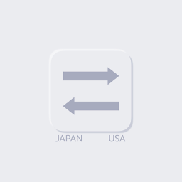

日米単位変換は、日本で使われる単位とアメリカで使われる単位を、かんたんに変換できるツールです。旅行や日々の生活から、仕事や学習まで、さまざまな場面でお使いいただけます。
不具合のご報告・ご要望・ご質問は、下記メールアドレスまでお気軽にご連絡ください。
よくある質問:
Japan-US Unit Conversion makes it easy to convert between the units used in Japan and those used in the US. It's handy for travel, daily life, work, and study.
For bug reports, feature requests or questions, please email us at the address below.
FAQ: